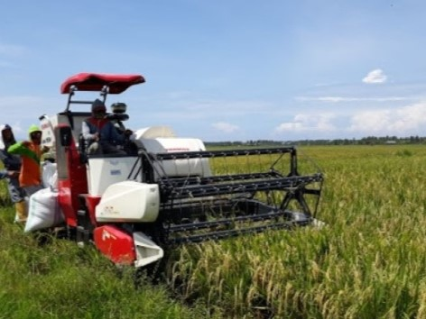
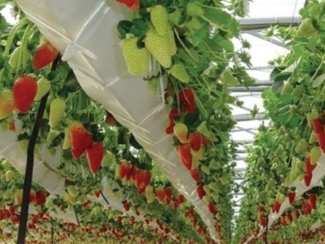

Home
Content
Pertanian Modern
Panduan & Tips
About Us
Contact Us
Panduan dan Tips Menanam
Tips Mudah Bercocok Tanam dengan Hidroponik : Budidaya Sayur Sawi
Apa itu Vertikultur? Kenali dan Pahami Tips Menanam dengan Sistem Vertikultur Paralon
Inovasi Smart Farming : Budidaya Tomat di dalam Greenhouse
7 Tips Menanam Melon Hidroponik
Drone Sprayer (Penyemprot Tanaman) : Solusi Pertanian Masa Kini
Tanam Padi Lebih Efisien Menggunakan Rice Transplanter

Tips Panen Padi Lebih Mudah Menggunakan Indo Combine Harvester

Mengintip Pertanian Stroberi Tanpa Tanah di Eropa : Bertani Hidroponik Modern
Inilah Langkah-Langkah Budidaya Tanaman Kentang dengan Sistem Aeroponik